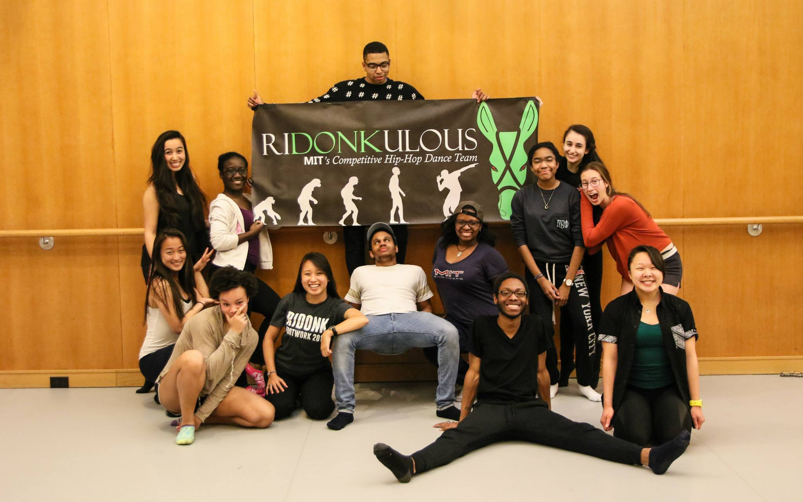

MIT
RIDONKULOUS
ABOUT US
Originally founded in the spring of 2005 and reestablished in the fall of 2006, MIT Ridonkulous is a hip hop dance group whose goal is to bring dance to other schools and venues in the greater Boston and New England area.
Past performances include charity events, collegiate shows, and competitions such as Elements, Prelude, Jam On It, New England Collegiate Dance Collaboration, Defining Rhythm and World of Dance! We host our own show, Footwork, every spring, and have also hosted many workshops taught by the nation's top choreographers.
Our mission is to have fun, dance, and show the world why we are so RIDONKULOUS!
CURRENT MEMBERS
INACTIVE MEMBERS

Name:
Aaron Suarez
Hometown:
Corpus Christi, TX
Year:
Fall '12 - Present
Current Exec Position:
Captain
Bio:
Once overweight and introverted, Aaron Suarez never imagined that dance would one day save his life. Initially inspired by movies like You Got Served and Honey, he started performing with a hip-hop team back home in South Texas. Aaron came to MIT to study Computer Science and to dive into Boston’s dance culture. Currently a member of MIT’s Ridonkulous and Mocha Moves, Aaron can happily say that he is finding a family on the dance floor.

Name:
Angela Wang
Hometown:
Taipei City, Taiwan
Year:
Fall '10 - Present
Bio:
1. When I'm not dancing, I'm either sleeping or eating. 2. I have an Asian accent. 3. My favorite food is fries and dumplings. 4. I don't know what I'm doing or where I'm going after I graduate. 5. I love making sexual jokes. 6. Donk is awesome.

Name:
Camille Sullivan
Hometown:
Potomac, MD
Year:
Fall '12 - Present
Current Exec Position:
Artistic Director
Bio:
Camille never danced before coming to MIT (well, other than parties/goofing around with friends), and she fell in love with hip-hop dance at the Activities Midway when she watched DT, Donk, and Mocha perform. Camille has danced in DT from then on and has choreographed since the spring of 2012, but she is currently taking a semester off from dancing in DT. She has danced in Mocha Moves since the spring of 2012, and this semester she is Assistant MoShoCaptain as well as one of the main choreographers. Camille is just so amazed at how much she has learned and grown so far, and she is really excited to be pushed even more by being on Donk. Camille cannot wait to be able to contribute to the group through choreographing and hopefully an exec position! Outside of dance, Camille studies Biology. She is preparing to attend medical school after MIT, possibly pursuing an MD/PhD joint degree. She might take a gap year in which she would most likely do MISTI-Chile again for 9 to 12 months. Camille conducts research in lymphoma metastasis in the Bhatia Lab of the Koch Institute, and she tutors General Chemistry and Intro Biology for the Office of Minority Education. Her favorite Donk memories so far are the reading room sesh after the first practice with fellow Baby Donkers and the galleria trip where she knocked over a Van’s shoe display. She also realized that David Han is hilarious, lol. Excited for more memories!!!

Name:
Claire Patterson
Hometown:
Santa Barbara, CA
Year:
Fall '12 - Present
Current Exec Position:
Captain
Bio:
Claire Patterson joined the Ridonkulous team in the fall of 2012. Claire began her dance training when she was three and immediately fell in love with it. She danced ballet at Gustafson Dance Studio for five years and then began taking jazz and hip-hop classes at Santa Barbara Dance Arts. She has trained in the styles of lyrical, jazz, contemporary, Broadway jazz, hip-hop, and ballet throughout her dance career and was a part Santa Barbara Dance Art’s pre-professional dance companies for six years. In the fall of 2009, Claire began working for the youth run organization Everybody Dance Now! – a non-profit that offers free hip hop dance classes to kids who would otherwise lack the parental support, transportation, or financial resources to participate in such activities. She served as the organization’s Leadership Board Member, Performance Troupe Director, and Dance Instructor for three years.

Name:
Matthew Fox
Hometown:
Lafayette, LA
Year:
Spring '12 - Present
Bio:
Matt started dancing during the fall of 2011 when an overtly enthusiastic upperclassman coerced him – an impressionable freshman – to attend Dance Troupe auditions one weekend. Although Matt never saw himself as a dancer, he danced in two collabo dances that semester. His experience allowed him to forge great bonds with friends and to uncover an amazing release of stress at a stress-heavy school. Dancing energizes a spirit of youth, energy, and passion that uncover the beauty of life, not only for a singular person but also – more importantly – for the group as a whole. During the fall of 2011, Matt began to watch Donk and Mocha as much as possible, aspiring to one day be a part of an even more committed group of dancers. Since the spring of 2012, Matt has found this opportunity in Donk and has grown tremendously as a person and dancer through the experience. When Matt is not dancing, he hangs out with his fraternity brothers at Phi Delts, plays a pickup game of soccer or basketball with some friends, or spends time the dance family that has made his time at MIT so special and so different than what he ever expected.

Name:
Mitali Kini
Hometown:
Scottsdale, AZ
Year:
Spring '12 - Present
Bio:
The indescribable beauty of dance has impacted Mitali throughout her life. She began dancing (primarily hip-hop) in middle school through high school and always considered it, above all else, a form of pure artistic and personal expression. Music has always been an important part of her life, and dance was a manner of conducting/composing music through movement and life. Since Mitali began dancing at MIT, she has grown as a more self-aware dancer and as a choreographer with a fierce commitment to her teams and students. Nothing inspires her more than being a part of a remarkable team effort, a cooperative improvement, and a loving family that she has had the pleasure of knowing. Mitali currently investigates cancer cell metabolism in the Vander Heiden Lab in the Koch Institute of Integrative Cancer Research, and she hopes to attend medical school after her undergraduate studies. She holds her aspirations high, in both academics and dance, but will never let go of the gift of music and movement that have defined her life thus far.

Name:
Samantha Williams
Hometown:
Brea, CA
Year:
Fall '11 - Present
Bio:
Sammy started dancing at the age of 3 and hasn't stopped since. She trained and competed with Hart Academy of Dance in La Habra, California in jazz, tap, ballet, contemporary, hip hop, and musical theater. Unwilling to give up dancing in college, she sought out every opportunity to dance when she came to MIT as a freshman. She has been a dancer and choreographer for Fixation, Dance Troupe, and Ridonkulous and continues on the latter two. The members of Ridonkulous have become a family to her and she cherishes the laughs, struggles, tears, and hard work that bond them together. "Dancing is the loftiest, the most moving, the most beautiful of the arts, because it is not mere translation or abstraction from life; it is life itself." -Havelock Ellis "For You, I sing I dance." -Phil Wickham
Name:
Shannon Basara
Hometown:
Oxnard, CA
Year:
Fall '13 - Present
Bio:
Shannon is a nursing student at Northeastern but has decided to enter the brave new world of MIT hip hop in the Fall of 2013. She doesn't consider herself a hip hop dancer, as she has trained more in styles such as ballet, pointe, contemporary, jazz, modern, tap and African. But she also says she isn't a runner after having run a half marathon, so take her words with a grain of salt. She is honored to have been chosen to join the Donk family. She loves to push herself in every aspect of dancing and performing and is excited for all of the amazing experiences to come.
ALUMNI
VIDEOS
Footwork 2015
World of Dance Boston 2014
Footwork 2014
World of Dance Boston 2013